Governando o que nenhuma planilha aguenta
Operações de varejo multi-unidade rodavam em processos manuais: limites de estoque observados manualmente, funcionários integrados em arquivos desconectados, políticas de acesso comunicadas individualmente sem nenhuma forma de verificar compliance. A Instivo precisava de uma camada de dados governada que operadores pudessem construir e possuir sem o TI na sala.
0
chamados de TI necessários para mudanças de configuração · gestores agem diretamente
5×
velocidade projetada de onboarding de unidades · hierarquia pré-configurada, só ajustes locais
1
registro de entidade · referenciado em todos os módulos sem duplicação

A virada · seis ferramentas desconectadas → um workspace
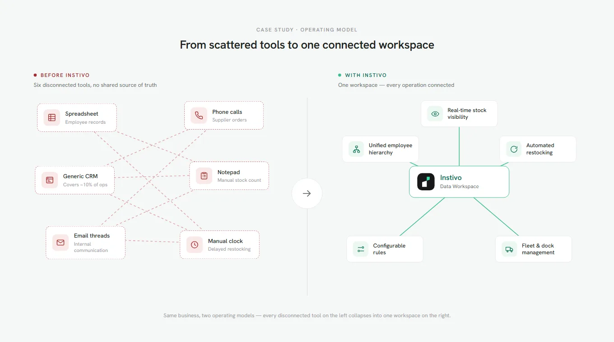
As operações de varejo eram governadas por quem lembrasse de agir, em seis ferramentas que nunca se falavam. A Instivo colapsa tudo isso em um workspace conectado.
O problema
Empresas de varejo com múltiplas unidades não tinham um único lugar para gerenciar suas próprias operações. Registros de funcionários viviam em planilhas. Pedidos a fornecedores aconteciam por telefone. O estoque era contado manualmente. Um CRM cuidava do lado do cliente, mas nada governava o que acontecia internamente.
Um produto caindo abaixo de 50 unidades não tinha nenhum gatilho automático. Alguém precisava notar, achar o contato do fornecedor, ligar e fazer o follow-up.
Um novo funcionário exigia atualizações manuais em múltiplos arquivos sem nenhuma fiscalização de que isso tinha sido feito. Uma mudança de política de acesso precisava ser comunicada individualmente, sem mecanismo para verificar compliance.
A Instivo foi construída para substituir essa fragmentação. Mas uma plataforma onde gestores configuram regras, limites de estoque disparam reabastecimento automático, e hierarquias operacionais inteiras são estruturadas em um só lugar precisa de algo por baixo que a maioria dos produtos SaaS pula: uma camada de dados governada que a própria operação controla.
O produto
O Data Workspace é onde os dados são criados, estruturados e mantidos. Tudo o mais na Instivo, cada tela, cada relatório, cada formulário, lê diretamente do que vive ali dentro.
Todo campo disponível em um formulário na plataforma, toda categoria à qual um produto pode pertencer, todo papel que um funcionário pode receber remonta a uma hierarquia construída aqui. Agendar uma doca exige o papel do motorista, o registro do caminhão, o número da doca, o armazém ao qual ela pertence, e a cadeia de gestão acima dele. Nada disso existe a menos que alguém tenha construído no Data Workspace primeiro.
Workspaces de sistema
Vêm pré-configurados e alimentam funções críticas da plataforma. Não podem ser excluídos. São a fundação estrutural da qual tudo o mais depende.
Workspaces livres
Criados pelos usuários para seus próprios propósitos organizacionais. Sem consequências downstream se modificados ou removidos. Flexibilidade total dentro do limite do sistema.
A distinção importava por mais do que razões técnicas. A mesma interface que dá a um gestor flexibilidade para construir hierarquias customizadas também está a uma exclusão errada de quebrar um formulário do qual todo novo funcionário depende.
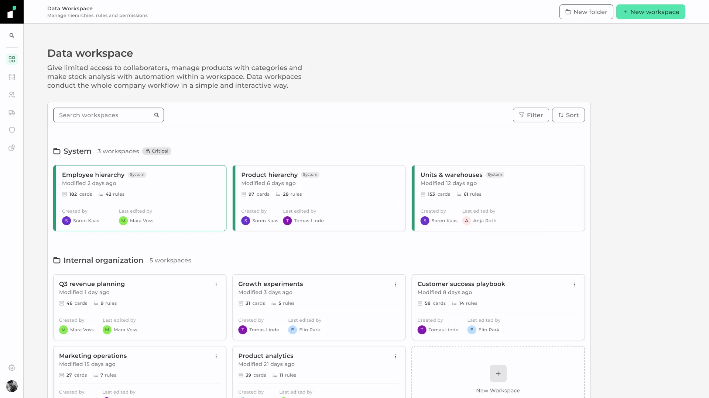
Lista de workspaces · Sistema trancado, Livres totalmente editáveis
Três usuários, um sistema
Três papéis diferentes interagiam com a plataforma, cada um com uma superfície diferente. Uma regra criada para o IT Admin podia silenciosamente bloquear algo de que um Gestor dependia. Acertar o modelo de permissão exigiu desenhar os três simultaneamente.
Gestor
Hierarquia & regras
Constrói e mantém hierarquias, configura regras, define o que cada papel pode ver e fazer. Precisa de flexibilidade sem conseguir quebrar o que o TI trancou.
IT Admin
Acesso & privilégios
Define acesso em nível de sistema e privilégios por usuário ou grupo. Suas regras ficam acima das do gestor. Conflitos acontecem invisivelmente a menos que a interface os revele.
Usuário operacional
Formulários & fluxos
Nunca abre o Data Workspace. Experimenta-o através dos campos disponíveis num formulário, das categorias visíveis num painel, das ações que seu papel permite.
O problema de camadas era específico. Uma regra de TI podia restringir o que um gestor vê. Uma regra de gestor podia bloquear uma ação operacional mesmo se o TI tivesse concedido acesso. Os dois podiam ser verdade simultaneamente, invisivelmente, sem nenhum conflito revelado ao usuário que bateu na parede.
A interface precisava tornar essas camadas legíveis sem expor a cadeia completa de permissões a cada usuário. Um gestor precisava saber que sua regra se propagaria. Um usuário operacional precisava saber por que uma ação estava indisponível.
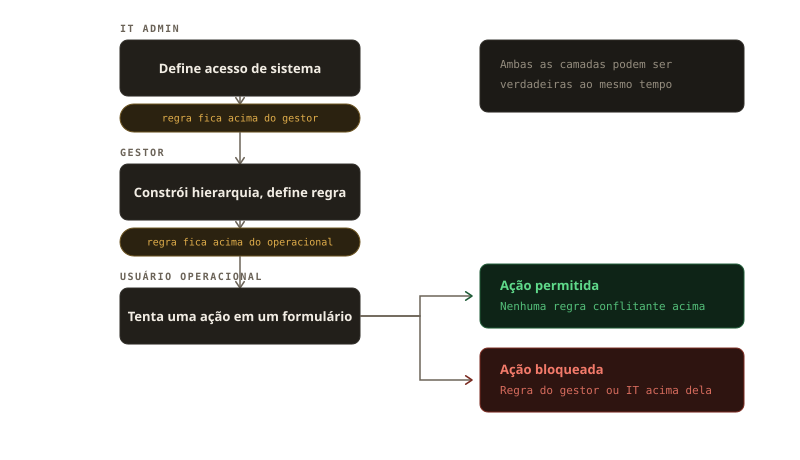
Modelo conceitual da lógica de camadas, não é uma tela do produto.
A hierarquia
O briefing original pedia um sistema de pastas. Uma pasta contém arquivos. Arquivos pertencem a uma pasta. A hierarquia é linear e a relação é unidirecional.
Um produto de shampoo pertence a higiene, cuidados com o cabelo e cuidados pessoais simultaneamente. Em um modelo de pastas, ele só pode viver em uma.
As outras duas duplicam o registro ou perdem a relação por completo. Eu propus um sistema baseado em cards onde entidades são linkadas em vez de aninhadas.
Modelo de pastas vs. modelo de cards linkados · por que uma estrutura de pastas quebra para entidades compartilhadas
Cada card representa uma entidade real no sistema com um ID exclusivo. O mesmo card pode ser referenciado em múltiplos workspaces, desempenhando um papel estrutural diferente em cada um. Na hierarquia de produtos é um filho de higiene. No workspace de estoque é um pai de um limite de reabastecimento. No workspace de transporte é um filho de uma categoria de carga.
A analogia que usei internamente foi tokens de design. Um token é um valor que vive num sistema de referências, e seu significado depende do contexto em que é usado. O canvas se reorganizava automaticamente conforme as conexões se multiplicavam, removendo do usuário a responsabilidade pela legibilidade.
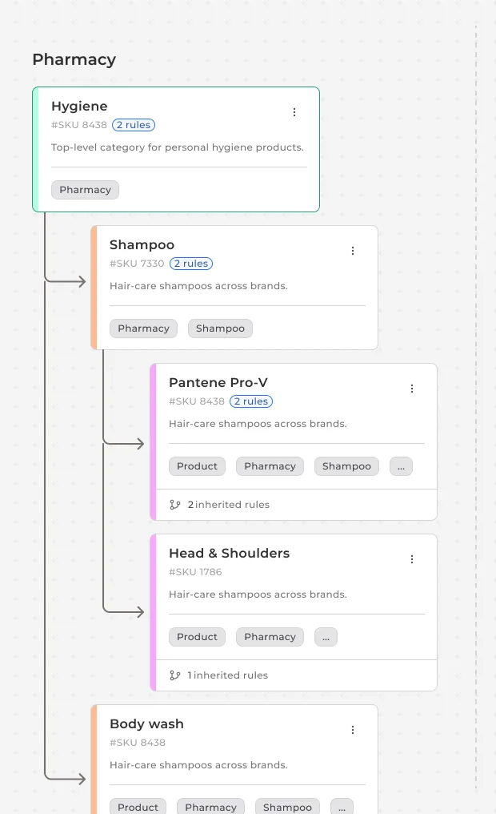
Hierarquia Pharmacy no canvas · cards linkados com contagem de regras e badges de regra herdada
O motor de regras
Selecionar um card no canvas revela os controles de editar, excluir e colapsar logo no cabeçalho, com a contagem de regras ao lado do título como um badge. Clicar em editar abre um modal restrito àquele card: nome, descrição, suas conexões de pai e filhos, e uma aba de Regras. Dentro de Regras, o esquema é fixo: um operador, uma entidade, uma condição e uma ação, cada um escolhido de uma lista restrita e renderizado como um chip. Um gestor monta "Se · produto · estoque abaixo de 50 · disparar · reabastecimento" sem escrever uma linha de lógica.
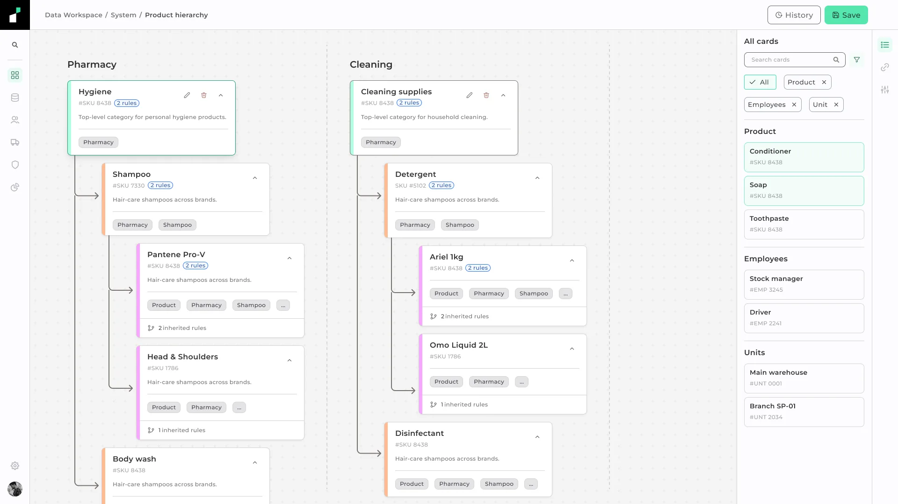
Card selecionado · controles de editar, excluir e colapsar mais o badge de contagem de regras
Regras podem ser restritas a um único card ou propagadas para todos os filhos na hierarquia. Um card que herda uma regra de um pai a mostra dentro do mesmo modal, marcada com um badge "Somente leitura" e uma nota de onde ela veio. O gestor pode ver o que está sendo aplicado e rastrear a origem, mas não pode editá-la no filho: só o card que possui a regra pode.
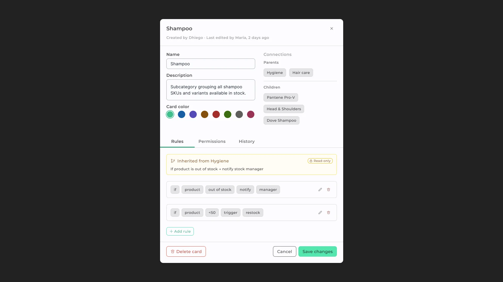
Modal do card · aba Regras com uma regra herdada somente leitura e duas regras próprias
A visão de estoque é onde essa regra mostra seu trabalho de fato. Todo card de produto carrega um status (Crítico, Baixo, OK) resolvido diretamente da regra de limite, não definido manualmente. Um gestor escaneando essa lista não está checando estoque; está confirmando que o motor de regras está fazendo o trabalho dele.
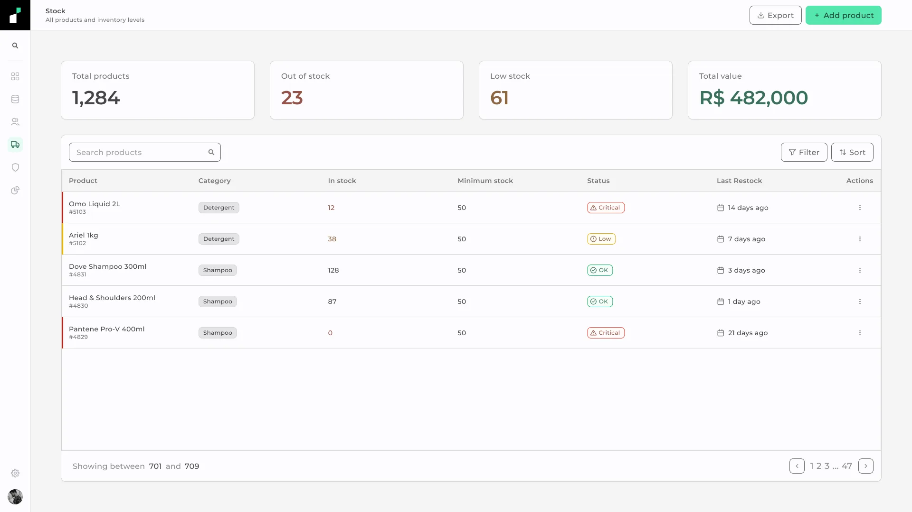
Visão de estoque · status resolvido automaticamente a partir da regra de limite
Governança
Workspaces de sistema mostram um indicador de cadeado e um badge "system" na tela de seleção. O controle de exclusão é visível mas desabilitado. Passar o mouse sobre ele revela um tooltip: "Este workspace é crítico para o sistema e não pode ser excluído." A ação não está escondida. O motivo de estar indisponível é declarado no momento em que o usuário precisa dele.
Um gestor que não consegue achar a opção de excluir não sabe se falta permissão ou se a exclusão simplesmente não é possível nesse contexto. Esconder o controle baseado em permissões era o caminho mais fácil. Não era o mais claro.
Controle escondido
O usuário não vê a ação. Não tenta executá-la. Mas também não sabe se a funcionalidade existe, se falta acesso, ou se algo está impedindo. A ambiguidade permanece aberta.
Desabilitado + tooltip
O usuário vê a ação. Vê que está indisponível. Vê por quê. A restrição é comunicada no exato momento em que o usuário precisa dela. Nenhuma documentação necessária.
A mesma lógica se aplicava a regras herdadas dentro dos modais de card. Uma regra propagada de um pai é visível para o gestor do filho mas marcada como somente leitura, com uma referência à sua origem. Eles podem ver a restrição e rastreá-la até a origem. Não podem removê-la acidentalmente enquanto editam outra coisa.
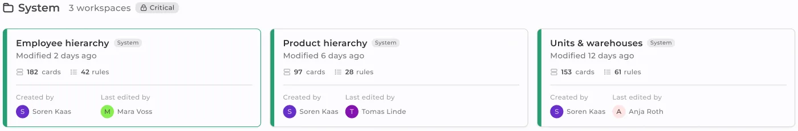
Seleção de workspace · workspaces de Sistema marcados como críticos e trancados
Design system
O design system que herdei não tinha tokens. Componentes que cumpriam a mesma função existiam em múltiplas versões sem fonte compartilhada. O arquivo Figma não tinha estrutura que sobreviveria a uma mudança significativa na linguagem visual. Não havia lógica responsiva porque o produto era considerado desktop-only.
Eu o reconstruí em quatro camadas. Core guarda boas práticas de design: uma grade de espaçamento de 4px, uma escala tipográfica definida, valores de cor base. Palette guarda rampas de cor de 25 a 950 em todos os tons que o sistema possa precisar. Brand é onde vivem as decisões específicas do cliente. Semantic se divide em três dimensões: cor com modos claro e escuro, tamanho com breakpoints desktop, tablet e mobile, e tipografia com os mesmos três breakpoints.
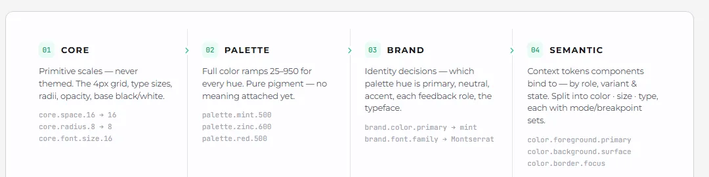
Arquitetura de tokens · camadas Core, Palette, Brand e Semantic
O sistema em camadas significava que adaptar o sistema para um novo cliente exigia mudanças só na camada Brand. Core e Palette permaneciam fixas. Semantic recalculava automaticamente. Oito rampas de paleta completas alimentam a camada Brand: mint para primária, zinc para neutra, mais seis outras para cada papel de feedback que o produto precisa.
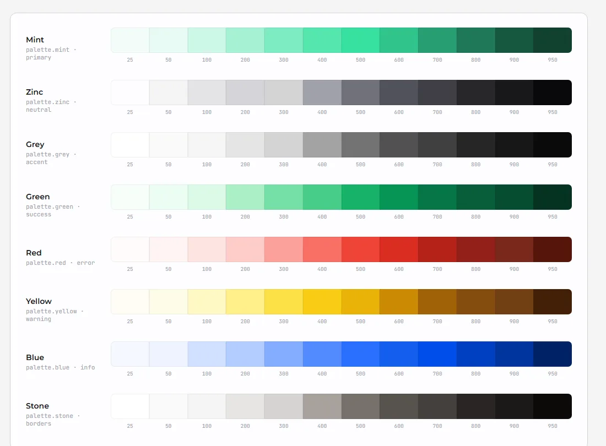
Camada Palette · oito rampas de cor de 25 a 950
Fleet & Dock
O Data Workspace não operava isoladamente. A Instivo incluía um segundo módulo para gestão de doca e frota: agendamento de caminhões chegando em docas numeradas, rastreamento de motoristas e veículos, registro de carga e destinos.
O motorista que um gestor registrou numa hierarquia era o mesmo motorista que aparecia num agendamento de doca, puxado automaticamente do mesmo registro.
Agendar um horário de doca exigia um registro de motorista com categoria de licença válida, um registro de veículo com placa registrada, um registro de doca com sua baia designada, e um registro de armazém com sua cadeia de gestão. Todas essas entidades eram construídas e mantidas no Data Workspace. O módulo Fleet & Dock as consumia diretamente.
Sem duplicação, sem cadastro manual cruzado, sem camada de integração entre os dois módulos. Se a categoria de licença do motorista mudasse no Data Workspace, a mudança era imediatamente refletida em todo agendamento de doca associado a esse motorista: um registro, uma fonte de verdade.
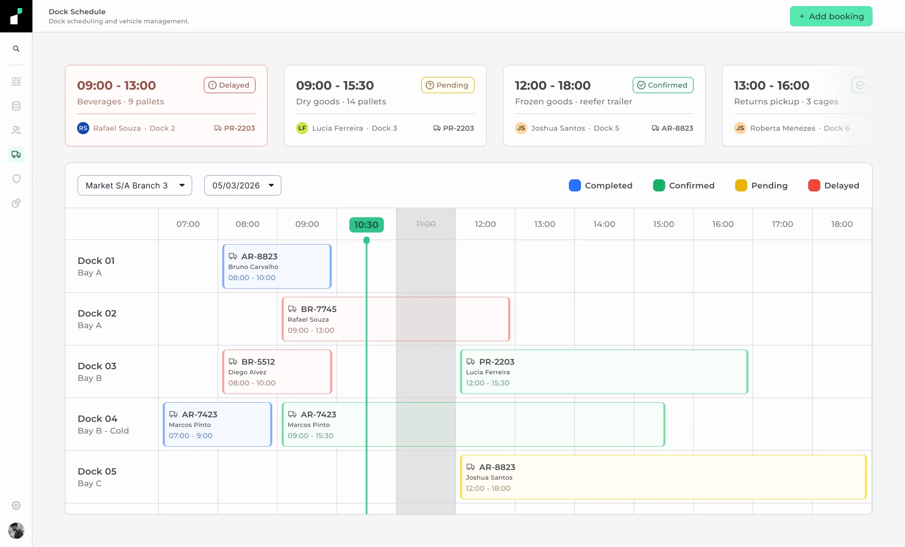
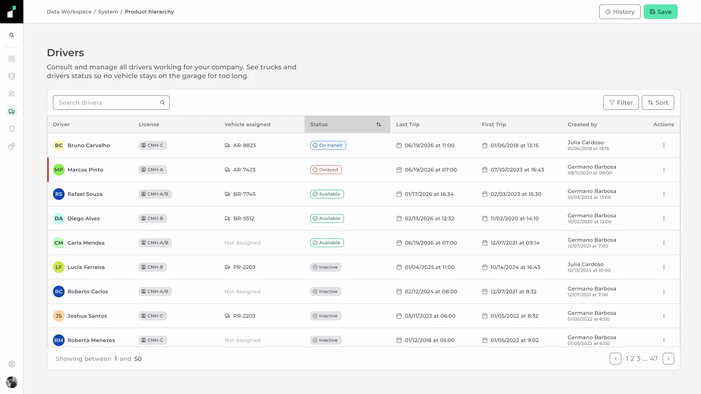
Resultado
O produto não chegou ao lançamento público durante meu engajamento. Saí após aproximadamente sete meses de trabalho de design. O que segue é projetado com base em benchmarks de SaaS enterprise para plataformas de governança de escopo comparável.
~70%
Redução estimada no tempo de configuração quando usuários não técnicos agem sem abrir chamados de TI
Benchmarks de governança SaaS enterprise
5×
Onboarding de unidade mais rápido: novas unidades partem de uma estrutura funcionando em vez de mapear categorias e papéis a partir de uma tela em branco
Implantações de plataformas comparáveis
100%
Dos processos manuais com gatilho definido substituídos por regras que fiscalizam a ação automaticamente
Design de sistema · cobertura do motor de regras
0
Registros de entidade duplicados entre módulos: um card, referenciado em todo lugar, atualizado uma vez
Arquitetura de cards linkados
Antes da Instivo, uma mudança de configuração exigia o envolvimento do TI como intermediário. Um gestor que precisava modificar permissões de acesso, adicionar uma categoria de produto, ou mudar um limite de reabastecimento não conseguia fazer isso diretamente. O Data Workspace tornou todas essas ações self-service para os papéis que as possuíam.
Esse também foi o primeiro projeto em que trabalhei dentro de um time de design maior que só eu, com governança e manutenção de design system como parte do próprio trabalho, não uma sobra depois do trabalho de design de verdade. O varejo trouxe sua própria complexidade também: fluxos de dado que um usuário comum nunca toca diretamente, escondidos por completo atrás da interface que um gestor vê. Essa combinação é o motivo de eu ainda checar quem mais depende de um design system antes de mudar qualquer coisa nele.
Vamos conversar
Aberto pra próxima posição.
Vamos conversar.